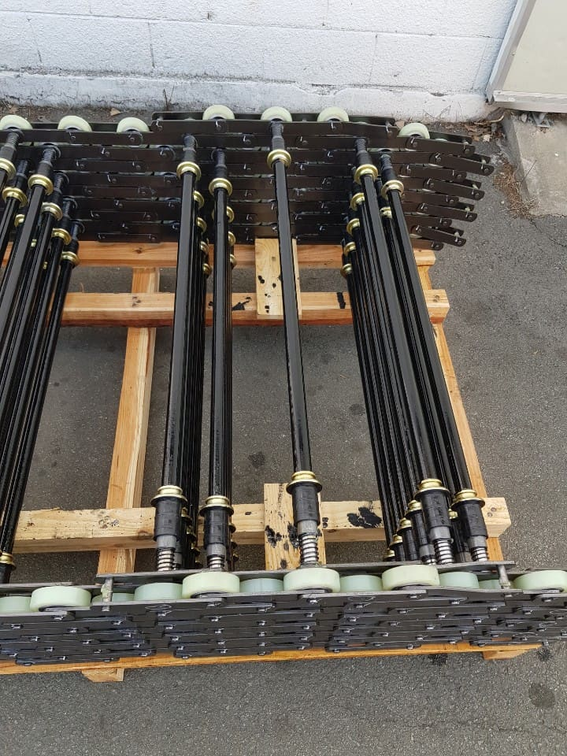
Hyundai Type
현대 TYPEEscalator step chain to Hyundai Elevator specification, matched by chain pitch and step distance.
PRODUCTS
Power transmission products matched to field requirements — from elevator and escalator chain to conveyance and drive chain and lubrication solutions.
A core component tied directly to the drive of escalators and moving walks. We supply step chain, step rollers and handrail parts matched to the specifications of major makers such as Hyundai, OTIS, Thyssen (Dongyang) and Schindler.

Escalator step chain to Hyundai Elevator specification, matched by chain pitch and step distance.
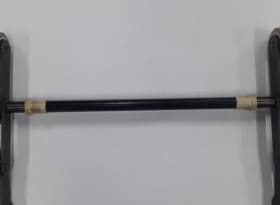
Escalator step chain to OTIS specification.
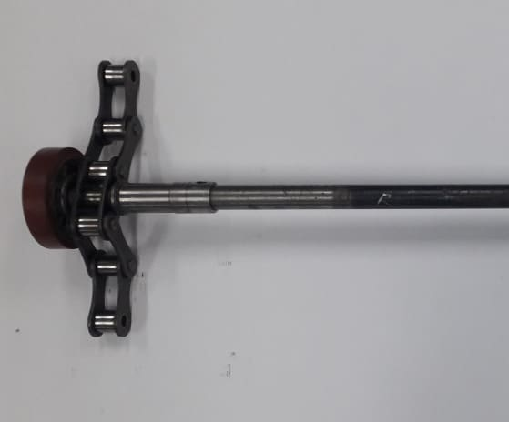
Step chain to thyssenkrupp and Dongyang specification.
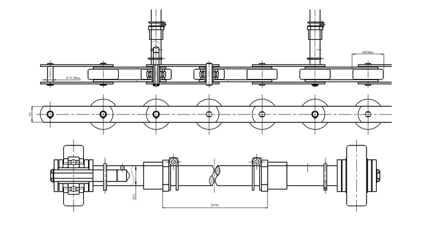
We also cover step chain to the specifications of other makers such as Schindler.
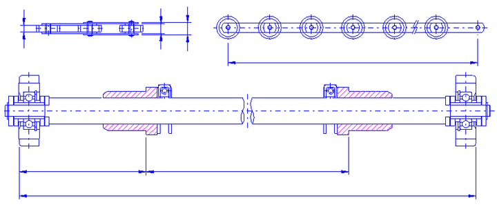
Drive chain dedicated to moving walks, covering 1200 / 1400 / 1600 types from Hyundai, OTIS and others.
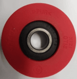
Step rollers, handrail drive and tension rollers, drive sprockets and more.
From standard roller chain — the basis of power transmission — to special specifications matched to environment and load. We cover the full range of RS (HC · DBC) sizes.
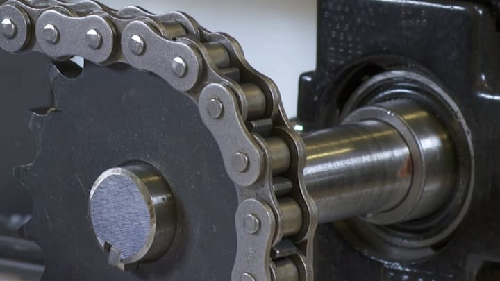
The most widely used standard chain for power transmission, supplied in single- and multi-strand.
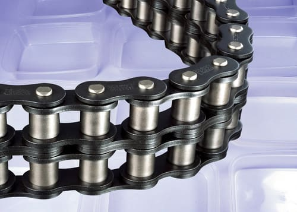
Oil-impregnated bushings extend wear life to roughly ten times that of standard chain — suited to environments where lubrication is difficult.
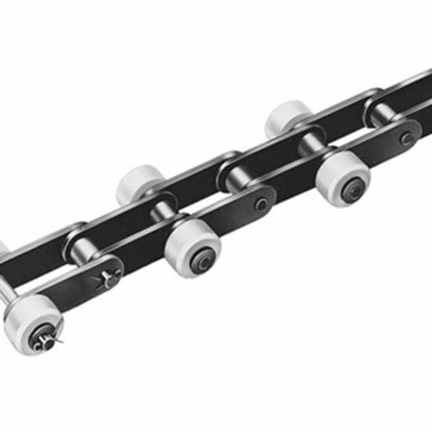
A free-flow chain that carries goods on side rollers, available in Z and K types.
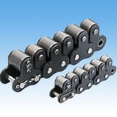
Goods ride on top rollers so they can be conveyed or stopped regardless of chain direction and speed.
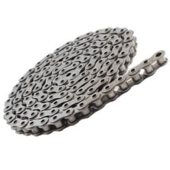
A hollow-pin structure lets attachments be added or removed with the chain in place. Uses standard sprockets.
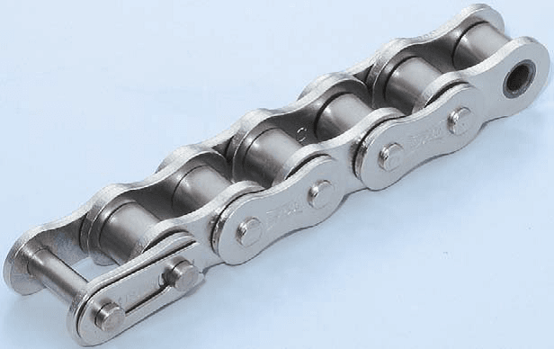
For food, pharmaceutical and chemical environments that need strong corrosion resistance. Usable from −20°C to 300°C.
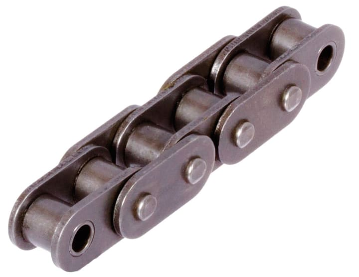
Link plates made flat give better fatigue strength than standard roller chain.
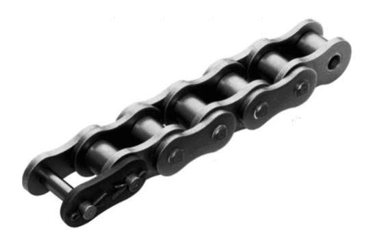
Chain designated with an "H" suffix. Thicker link plates improve breaking strength and wear resistance.
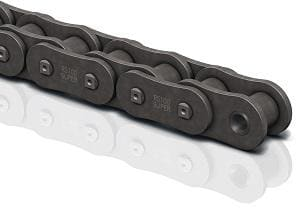
High-strength chain with tensile and fatigue strength raised through special materials and processes. Used on lifts and other safety-critical equipment.
Chain with link plates at twice the pitch of standard chain — an economical choice for conveyor lines with long shaft-center distances.
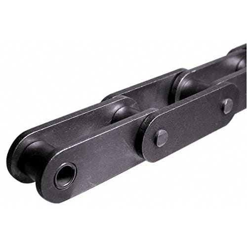
Available with S- and R-type rollers and various attachments for long-distance conveyors.
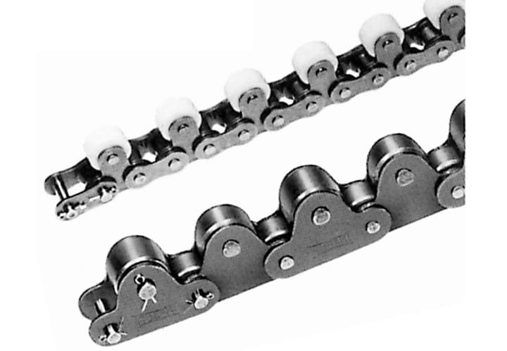
A conveyance-only double pitch chain where large top rollers carry goods directly.
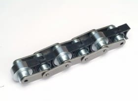
Conveys goods at about 2.5× chain speed via the roller diameter ratio. Choose plastic (low noise) or steel (heavy load).
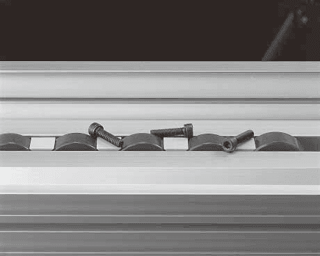
A cover over the joint keeps out bolts, nuts and other debris. Its low center of gravity gives stable conveyance, and roller material (steel / plastic) is selectable.
Used for high-load linear motion in forklift masts and heavy equipment. Made to order to the required length.
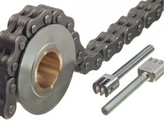
Divided into light-load AL type and heavy-load BL type. Plates and pins are combined for vertical and horizontal transfer in forklifts and heavy equipment, made to order by length.
Used on conveyance equipment for logistics and manufacturing lines, with attachment specifications configured to the load.
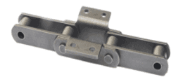
Classified by strength into standard, semi-heavy and heavy grades, with S / M / R / F roller types.
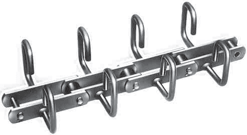
A pollution-control type that conveys powders and granules inside a sealed casing with no scattering. Attachments are chosen to suit the material.
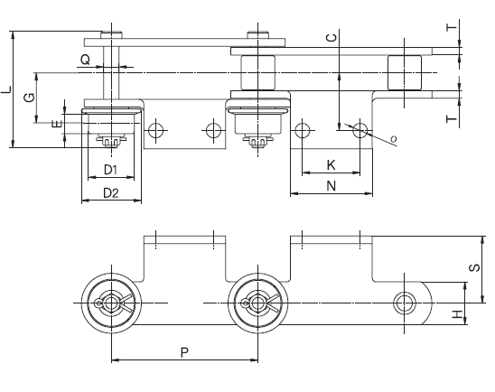
Special chain for conveyance on automotive assembly and painting lines, supplied in VB and FB types.
Dedicated lubrication solutions that determine chain life and equipment uptime. We propose products to suit site conditions.
A dry-film lubricant from Interflon, founded in the Netherlands in 1980. Its proprietary MicPol® technology reduces dust adhesion and extends lubrication intervals. Now supplied in around 45 countries.
Power-transmission parts, lubrication and hydraulic / pneumatic devices, and custom fabrication inquiries.
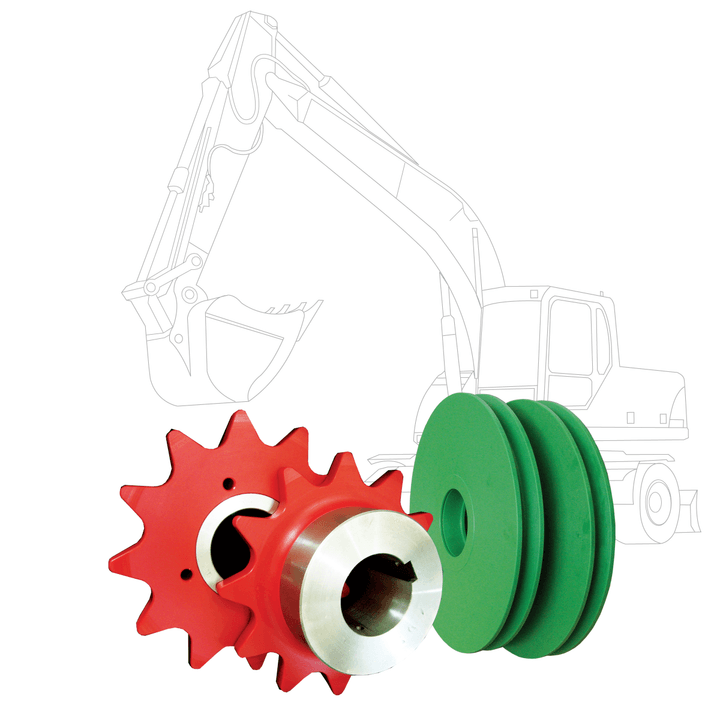
High-performance plastics that replace metal and ceramics — strong, elastic and heat-resistant lubrication-free chain and parts (TP-LUBE and others).
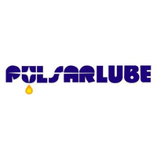
Automatic grease dispensers such as Pulsarlube. Metered lubrication of chains and bearings reduces early wear, failure and power loss.
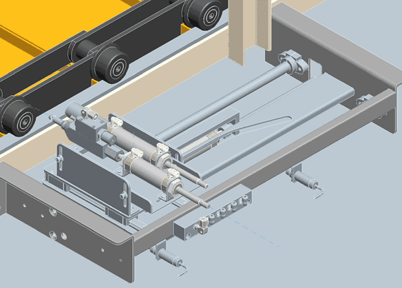
Cylinders, valves and other hydraulic / pneumatic drive devices and assemblies.
Beyond supplying chain, we provide the engineering that equipment operation needs — from on-site inspection to lubrication-management equipment and parts machining.
We supply automatic grease injectors, trolley-chain cleaning units and chain oiling devices, designed and built for the site — trolley, pin chain, slat, power-and-free, assembly line, escalator and more.
Based on on-site line inspection and reporting, we propose chain design and improvement design suited to the operating environment.
We machine and fabricate sprockets, gears and other power-transmission parts to drawing specification.
EMS rollers, AGV wheels, lifter guide rollers and more — used on elevator and escalator equipment and on automotive painting and body-shop conveyance lines.
Building on the expertise gained from selling power transmission products and building automation and environmental facilities, we operate GreenCell — a mushroom-growing container farm using automation and ICT integrated environmental control — as a separate company. It produces premium mushrooms such as baekhwago reliably, regardless of season or climate.
Container farm adoption, baekhwago growing, and technology transfer / start-up support are covered on the GreenCell site.
Go to GreenCell →Click to open the PDF in a new window. (Catalogs are in Korean.)
You don't need to know the exact specification.
Tell us your operating environment and conditions, and we will propose the right product.